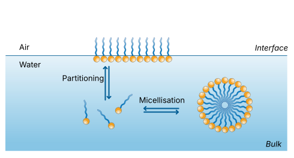
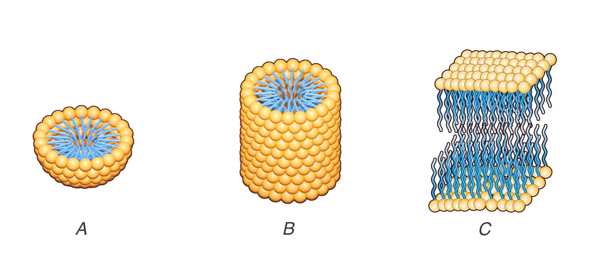

18 Surfactants
18.1 Hydrophobicity and amphiphiles
The hydrophobic interaction between solutes is a statistical force mediated by water (the solvent). Traditional explanations focus on the role played by hydrogen bonds (an attractive interaction due to the difference in electronegativity between oxygen and hydrogen in water) and the structure of water around solutes.
Polar molecules have regions with partial positive and negative charges due to differences in electronegativity between atoms, resulting in an uneven distribution of electrons. This allows them to interact strongly with water (hydrophilic) and other polar substances.
Apolar (or nonpolar) molecules, instead, have a more even distribution of electrical charge, lacking distinct poles. They do not mix well with water and tend to aggregate with other nonpolar substances.
In this chapter we discuss the behaviour of a special class of molecules. In these molecules one end contains a hydrophilic (literally, water-loving) part, while the other end is hydrophobic (water-fearing). For their nature, they are called amphiphilic (loving both) molecules, which reflects their structure, or surfactants (from SURFace ACTive AgeNT), which refers to their behaviour in solution.
For very small solutes (a few atoms) the traditional picture of hydro-phobicity/philicity is that the energetic advantage due to hydrogen bonding favors configurations that minimally disrupt the local structure of water, and this means that multiple apolar solutes tend to come together to minimise such disruption since they cannot form such bonds. However, for larger molecules (such as large proteins or longer macromolecular chains) interfaces between the bulk water and the solutes are formed, to which we can associate characteristic density fluctuations and surface tensions. Phase separation between a local vapor-like layer and the bulk water becomes then important and aggregation due to hydrophobicty becomes very much a a many-body effect. This is an active topic of current research (even by some of us, see Wilding and Turci (2025) ) and demonstrates how even very foundational concepts in soft matter remain to be explored.
In the rest of the chapter, we will look mostly phenomenologically at the structure of surfactants and how they collectively come together to form meso-scale structures via the process of self-assembly, and assume that there exist solvent-mediated interactions such as hydrophobicity that control the free energies of these assemblies.
A few chemical structures are shown below. They illustrates that the hydrophobic tail usually consits of hydrocarbon chains of different lengths
SDS (dodecyl sulfate)
In SDS (sodium dodecyl sulfate) the head is the hydrophilic sulfate group (\({\rm –OSO_3}\)), which is negatively charged and water-attracting whil the tail is the long hydrophobic 12-carbon alkyl chain (dodecyl group), which is water-repelling.
Cholesterol
In cholesterol the head is the small polar hydroxyl (-OH) group and the tail is the nonpolar hydrocarbon isooctyl side chain at the opposite end.
In general, the hydrophilic head might either be positively or negatively charged, zwitterionic (with both charges but overall neutral) or uncharged.
The hydrocarbon chains are insoluble in water. The molecules are thus preferentially located at the surface, which allows the hydrophilic head to be surrounded by water and the hydrophobic chains to avoid contact with water. There is always an equilibrium between surfactants at the surface and in the bulk of the solution. The coverage of the surface leads to a reduction of the surface tension with increasing surfactant concentration.
18.2 Self-assembled structures
Self-assembly is a fundamental property of surfactant molecules in solution. It also a highlight feature of soft-matter systems: under the influence of thermal fluctuations (typically mediated by a solvent), the constituents of soft matter systems self-organise into more complex, meso or macroscopic structures. This is typically due to driving thermodynamic forces that make initially unform systems find (local ord global) minima of their free energy which distinctive structural features. In this sense, soft matter systems explore free energy landscapes whose complexity is tuned by the strength of thermal fluctuations.
In many ways, we have already seen various forms of self assembly: crystallisation of colloids is itself self-organised but so is also the phase transition between the gasous and the liquid phase, or the isotropic-nematic transition in liquid crystals.
Full phase separation, though, is much more demanding than self assembly: in full phase separation we eventually attain the (global) free energy minimum corresponding to the equilibrium state prescribed by the chosen thermodynamic variables (e.g. temperature and pressure). The notion of self assembly emphasises instead the propensity of the constituents to aggregate, to form structures at intermediate scales, structures which can often be only very locally stable, and whose existence may rely not only on the structure of the energy landscape but also on the kinetics of the constituents, such as their diffusion mechanism.
In the case of surfactants, we need to consider that these molecules are often very small—typically just a few nanometers in length. This small size means that thermal fluctuations play a significant role in their behavior, and their assembly is rapid due to their fast diffusion. For example, for an approximately spherical surfactant of size \(R\) in a viscous medium its diffusivity is given by the Stokes-Einstein relation (see )\[ D = \frac{k_B T}{6\pi \eta R} \]
where \(D\) is the diffusion coefficient, \(k_B\) is Boltzmann’s constant, \(T\) is temperature, \(\eta\) is the viscosity of the solvent, and \(R\) is the radius of the particle. Compared to a colloidal particle of \(2 {\rm \mu m}\), a single SDS surfactant molecule of approximately \(2 {\rm nm}\) in size will be approximately 1000 times faster.
This leads to fast local equilibration and constant exchange between monomers and aggregates. As a result, the structures formed by surfactants are not static but exist in a dynamic equilibrium, with lifetimes and sizes that depend sensitively on temperature, concentration, and solvent conditions.
Due to their amphiphilic nature, surfactants spontaneously organise into ordered structures without external guidance, but driven by forces such as hydrophobicity, described above.
As a result, surfactants minimize the system’s free energy by forming a variety of aggregates such as micelles, vesicles, or bilayers. The specific structure formed depends on the molecular geometry of the surfactant and the solution conditions. Self-assembly is in many cases reversible and fundamentally dynamic process, with aggregates constantly forming and dissociating in equilibrium with monomers in solution.
18.2.1 Aggregation: general case
Suppose we have a system where solvent particles are dispersed in a solvent and tend to aggregate due to their mutual interactions. Suppose that we know the quantity \(\epsilon_n\) representing the free energy change when a specific particle is taken from the bulk and added to an aggregate of size \(N\).
Call $_1 $ and \(\mu_N\) the chemical potential of isolated particles and aggregates of size \(N\) respectively. In equilibrium, they must be equal, with value \(\mu\).
Let’s focus on an aggregate of size \(N\). We can express \(\mu\) in terms of
- the interaction energy from being in the aggregate (\(\epsilon_N\))
- the (translational) entropy of the aggregate as a whole (\(\propto {\rm number of aggregates}\times \ln {\rm number fo aggregates}\))
Assume an overall volume fraction of surfactants \(\phi\). Call the volume fraction of surfactants in an aggregate with \(N\) molecules \(X_N\), so that \(\sum_N X_N = \phi\). The numbers of aggregates of size \(N\) is then simply \(X_N/N\). This means that we can write the uniform chemical potential as
\[\mu = \epsilon_N + \dfrac{k_B T}{N}\ln{\dfrac{X_N}{N}}\]
we can rewrite this as
\[X_N = N \exp{\left( \dfrac{N(\mu-\epsilon_N)}{k_BT}\right)}\]
we can eliminate \(\mu\) by evaluating the expression for for \(N=1\) and plugging it back to get
\[X_N = N X_1^N \exp{\left( \dfrac{N(\epsilon_1-\epsilon_N)}{k_BT}\right)}\]
Obviously, the equation show that one has a large fraction of the solutes in an aggregated state only if there is a free energy advantage at forming aggregates, i.e. \(\epsilon_1>\epsilon_N\).
This means that knowning the form of \(\epsilon_N\) allows us to predict the aggregation behaviour. For example, imagine we have an aggregate with \(N\) particles of total radius \(r\approx (Nv)^(1/3)\) where v is the volume of a single particle. Then \(\epsilon_N\) is the free energy per particle of the aggregate of size \(N\), \(G_N=\text{ bulk free energy}+\text{surface free energy}\). Assuming a surface tension \(\gamma\) we can then write
\[\epsilon_N = \dfrac{G_N}{N} = \epsilon_\infty +\dfrac{1}{N}\gamma r^2 =\epsilon_\infty +\gamma\left(\dfrac{v^2}{N}\right)^{1/3}\]
which is a monotonically decreasing function of \(N\). By defininit \(\alpha k_B T = \gamma v^{2/3}\) we can extract a relation between \(X_N\) and \(X_1\) parametrised solely by \(\alpha\), i.e.
\[\text{number of aggregates of size N per unit volume} = \dfrac{X_N}{N}\sim (X_1 e^{\alpha})^N\]
This should be read as follows: if we have very few isolated particles at a certain thermodynamic condition, then \(X_1 e^{\alpha} < 1\) and the exponential factor \((X_1 e^{\alpha})^N\) becomes vanishingly small for large \(N\), leaving us with very few large aggregates. On the contrary, as \(X_1\) approaches \(e^{-\alpha}\) from below, we reach the critical point where \(X_1 e^{\alpha} = 1\), and aggregates of all sizes become equally probable. Since \(\epsilon_N\) is rapidly decreasing in \(N\), this means that above a critical value of overall packing fraction \(\phi\), the system cannot remain in a homogeneous state. Instead, it undergoes phase separation into a dilute phase of isolated monomers (with \(X_1\) pinned at \(e^{-\alpha}\)) in coexistence with a dense phase consisting of one or very few aggregates of very large (effectively infinite) size.
The volume fraction \(\phi\) at which this occurs is called critical aggregation concentration, or CAC.
18.2.2 Aggregation: the surfactant case
For amphiphilic molecules like surfactants, the free energy change \(\epsilon_N\) associated with adding a molecule to an aggregate is not a monotonically decreasing function of \(N\). Instead, \(\epsilon_N\) typically exhibits a minimum at a characteristic aggregation number \(N^*\). This reflects the fact that aggregates (such as micelles) of a particular size are thermodynamically favored: too-small aggregates cannot sufficiently shield the hydrophobic tails from the solvent, while too-large aggregates become energetically unfavorable due to packing constraints or headgroup repulsion. See Jones (2002) for a expanded discussion of this.

Mathematically, this means that the distribution \(X_N\) of aggregates as a function of \(N\) is sharply peaked around \(N^*\), leading to a well-defined aggregate size in solution. The equilibrium is then characterized by a coexistence of monomers and aggregates of size \(N^*\), with very few intermediate-sized clusters. This is in contrast to the general case discussed above, where the aggregate size distribution can be broad or even diverge near a phase separation threshold.
This behavior underlies the concept of the critical micelle concentration (CMC): below the CMC, almost all surfactant molecules are present as monomers; above the CMC, additional surfactant molecules predominantly form micelles of size \(N^*\), while the monomer concentration remains nearly constant.
Above the critical micellar concentration surfactants self-assemble in solution spontaneously into larger structures. (In the following we will consider aqueous solutions, although the arguments also apply to other polar or non-polar (organic) solvents.) This allows the hydrophobic parts to crowd together while being ‘shielded’ by the hydrophilic heads. The density of the hydrophobic cores is very similar to the density of fluid hydro-carbons and the random arrangements of the chains resemble closely a fluid structure.
The surfactant assemblies are not held together by chemical bonds, but only by weak interactions ( \(\lesssim k B T\) ). Their existence and properties are thus determined by a delicate balance between different effects, such as the transfer of hydrophobic chains into the core, interactions between the head group and the entropy of mixing. Small changes in control parameters, for example temperature, salt concentration or pH , thus have large effects on the characteristics of the surfactant aggregates. Nevertheless, for given conditions, they have very well-defined properties (shape, size etc.).
18.2.3 Shape of surfactant assemblies
Surfactants spontaneously self-assemble into a variety of different structures. We use packing considerations to understand and predict the shape of surfactant aggregates, leveraging what we have learned on colloids, polymers and liquid crystals.
We construct a geometric model where a surfactant molecule is described using the following parameters:
- optimal headgroup area \(a_{0}\): As discussed in the previous section, this depends on a delicate balance of forces and is thus not only controlled by the chemistry of the surfactant molecule, but also depends on different control parameters of the solution, such as salt concentration, pH or temperature. -volume \(v\) of the hydrophobic part: The hydrophobic part usually consists of hydrocarbon chains and for saturated hydrocarbons the volume \(v\) can be approximated by \(v \approx(27.4+26.9 \mathrm{n}) \times 10^{-3} \mathrm{~nm}^{3}\) where n is the number of carbon atoms.
- critical chain length \(\boldsymbol{l}_{\boldsymbol{c}}\) : The maximum effective length of the hydrophobic chains is called the critical chain length \(l_{c}\), which has to be shorter than the fully extended molecular length of the chain \(l_{\max }\). For saturated hydrocarbons the critical length can be estimated using \(l_{c} \leq l_{\max } \approx(0.154+0.1265 \mathrm{n}) \mathrm{nm}\). The critical chain length heavily depends on the detailed chemical structure of the molecule, for example on the presence of double bonds or branching, as well as the temperature.
The structure which will be adopted is determined by a balance between entropy, which favours small aggregates, and energy considerations: A certain shape or size might only be possible by imposing a headgroup area \(a>a_{0}\), which is energetically not favourable. We will now establish the criteria for the different shapes.

A. Spherical micelle
For a spherical micelle with aggregation number N , the total volume and surface area are given by
\[ \begin{gathered} N v=\frac{4 \pi}{3} R^{3} \\ N a_{0}=4 \pi R^{2} \\ \therefore \frac{v}{a_{0}}=\frac{R}{3}<\frac{l_{c}}{3} \end{gathered} \]
where we used the fact that the radius \(R\) cannot be larger than the critical chain length \(\mathrm{I}_{\mathrm{c}}\). We thus obtain for the critical packing parameter \(P\)
\[ P=\frac{v}{a_{0} l_{c}}<\frac{1}{3} \]
B. Cylindrical micelles
For a cylindrical micelle the total volume and surface area are given by \(N v=\pi R^{2} L\) \(N a_{0}=2 \pi R L\) \(\therefore \frac{v}{a_{0}}=\frac{R}{2}<\frac{l_{c}}{2}\) again using \(R<I_{C}\).
We thus obtain for the critical packing parameter \(P\) \(\frac{1}{3}<\frac{v}{a_{0} l_{c}}<\frac{1}{2}\)
Below the lower limit spherical micelles are formed.
C. Bilayers
For a bilayer the total volume and surface area are given by
\[ \begin{aligned} & N v=A D \\ & N a_{0}=2 A \\ & \frac{v}{a_{0}}=\frac{D}{2}<l_{c} \quad\left(\text { using } D<2 l_{c}\right) \end{aligned} \]
We thus obtain for the critical packing parameter \(P\) \(\frac{1}{2}<\frac{v}{a_{0} l_{c}}<1\) Below the lower limit cylindrical micelles are formed.
18.3 A simple on-lattice model for micelle formation
Aggregation of surfactants has been studied in various ways, including numerical simulations. One can employ extremely realistic, all-atom molecular dynamics to glean the microscopic details or construct more coarse-grained, statistical mechanics models using for exmaple on lattice interactions.
Here below you can find a Javascript implementation of a lattice-gas-like model where surfactants are representes by chains of 3 sites on a lattice, with one site for the solvophilic head and two for the solvophobic tail. Each lattice site is occupied by either an amphiphile segment or a solvent molecule.
There are only nearest-neighbor interactions and the hamiltonian is simply
\[ H=n_{\mathrm{HH}} E_{\mathrm{HH}}+n_{\mathrm{TS}} E_{\mathrm{TS}}+n_{\mathrm{HS}} E_{\mathrm{HS}}+\sum_{\mathrm{i}} E_{\mathrm{c}} \]
where \(n_{\mathrm{HH}}, n_{\mathrm{TS}}\) and \(n_{\mathrm{HS}}\) are the total number of head-head, tail-solvent and head-solvent bonds, \(E_{\mathrm{HH}}, E_{\mathrm{Ts}}\) and \(E_{\mathrm{HS}}\) are the head-head, tail-solvent and head-solvent interaction energies and \(E_c\) is the energy associated with the conformation of the \(i\) th molecule. The model has been discussed in detail in Care (1987).
The model is simplified by setting the head-head interaction to zero, the tail-solvent interaction hydrophobic \(E_{\rm TS}>0\), the head-solvent hydrophilic \(E_{\rm HS}<0\) and the chain completely flexible, \(E_c^i=0\).
Code
// This is ObservableJS code
// You can run at observableehq.com or convert it to an equivalent (and faster?) Python version if you like
viewof simulation = {
// --- Parameters ---
const width = 40, height = 40;
const chainLength = 3;
const chainsToCreate = numChains;
const T = temperature;
// const numChains = 10;
const E_TS = 1.0; // tail-solvent energy (solvophobic)
const E_HS = -1.5; // head-solvent energy (solvophilic)
// const T = 0.1; // temperature (kT units)
// --- Initialize grid and chains ---
let grid = Array.from({length: width}, () => Array(height).fill(null));
let chains = [];
// Periodic boundary helper
function mod(n, m) { return ((n % m) + m) % m; }
function getNeighbors(x, y) {
return [
{x: mod(x - 1, width), y: y},
{x: mod(x + 1, width), y: y},
{x: x, y: mod(y - 1, height)},
{x: x, y: mod(y + 1, height)}
];
}
function placeChains() {
for (let id = 0; id < numChains; id++) {
for (let tries = 0; tries < 100; tries++) {
let x = Math.floor(Math.random() * width);
let y = Math.floor(Math.random() * height);
if (grid[x][y]) continue;
let chain = [{x, y, type: 'head'}];
grid[x][y] = {id, type: 'head'};
let ok = true;
for (let i = 1; i < chainLength; i++) {
let last = chain[chain.length - 1];
let nbs = getNeighbors(last.x, last.y).filter(p => !grid[p.x][p.y]);
if (nbs.length === 0) { ok = false; break; }
let next = nbs[Math.floor(Math.random() * nbs.length)];
chain.push({...next, type: 'tail'});
grid[next.x][next.y] = {id, type: 'tail'};
}
if (ok) { chains.push({id, segments: chain}); break; }
else { chain.forEach(p => grid[p.x][p.y] = null); }
}
}
}
function energy(seg) {
let solventNbs = getNeighbors(seg.x, seg.y).filter(p => !grid[p.x][p.y]).length;
return seg.type === 'head' ? solventNbs * E_HS : solventNbs * E_TS;
}
function attemptMove(chain) {
const forward = Math.random() < 0.5;
const tail = forward ? chain.segments[0] : chain.segments.at(-1);
const head = forward ? chain.segments.at(-1) : chain.segments[0];
const options = getNeighbors(head.x, head.y).filter(p => !grid[p.x][p.y]);
if (options.length === 0) return;
const next = options[Math.floor(Math.random() * options.length)];
const dE_old = energy(tail);
grid[tail.x][tail.y] = null;
const dE_new = energy({...next, type: tail.type});
grid[tail.x][tail.y] = {id: chain.id, type: tail.type};
const deltaU = dE_new - dE_old;
const accept = deltaU < 0 || Math.random() < Math.exp(-deltaU / T);
if (accept) {
grid[tail.x][tail.y] = null;
grid[next.x][next.y] = {id: chain.id, type: tail.type};
if (forward) {
chain.segments.shift();
chain.segments.push({...next, type: tail.type});
} else {
chain.segments.pop();
chain.segments.unshift({...next, type: tail.type});
}
}
}
// --- Visualization ---
const svg = d3.create("svg")
.attr("viewBox", `0 0 ${width} ${height}`)
.style("width", "400px")
.style("height", "400px")
.style("border", "1px solid #ccc");
const g = svg.append("g");
function draw() {
const data = chains.flatMap(c => c.segments);
g.selectAll("circle")
.data(data, d => `${d.x}-${d.y}`)
.join("circle")
.attr("cx", d => d.x + 0.5)
.attr("cy", d => d.y + 0.5)
.attr("r", 0.45)
.attr("fill", d => d.type === "head" ? "blue" : "red");
}
// --- Main Loop ---
placeChains();
draw();
let running = true;
const button = html`<button>⏸ Pause</button>`;
button.onclick = () => {
running = !running;
button.textContent = running ? "⏸ Pause" : "▶ Resume";
};
(async () => {
while (true) {
if (running) {
for (let i = 0; i < chains.length; i++) {
const c = chains[Math.floor(Math.random() * chains.length)];
attemptMove(c);
}
draw();
}
await new Promise(r => setTimeout(r, 50));
}
})();
return html`<div>${button}<br>${svg.node()}</div>`;
}References
Care, Christopher M. 1987. “Cluster Size Distribution in a Monte Carlo Simulation of the Micellar Phase of an Amphiphile and Solvent Mixture.” Journal of the Chemical Society, Faraday Transactions 1: Physical Chemistry in Condensed Phases 83 (9): 2905–12. https://pubs.rsc.org/en/content/articlehtml/1987/f1/f19878302905.
Jones, Richard AL. 2002. Soft Condensed Matter. Vol. 6. Oxford University Press. https://bris.on.worldcat.org/oclc/48753186.
Wilding, Nigel B., and Francesco Turci. 2025. “Origin of the Inverse Temperature Dependence of Hydrophobic Attraction.” Phys. Rev. Res. 7 (June): L022079. https://doi.org/10.1103/66lz-1yw9.